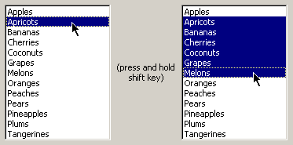

You can select a single item by clicking on it.
You can select multiple items by clicking and dragging up or down the list.
You can also select multiple items by clicking on the first item, (which sets the anchor, as indicated by the dotted focus rectangle) holding the shift key and clicking on another item. This will select all of the items between the two you clicked on.

You can also select multiple items by clicking each item individually while holding down the control key.

You can also select non-contiguous blocks of items by combining the shift and control keys.

You can keep selecting groups of items by repeating the last two steps.
The control key can also be used to deselect selected items, either one at a time by control-clicking, or multiple items by using the control-shift technique outlined above.